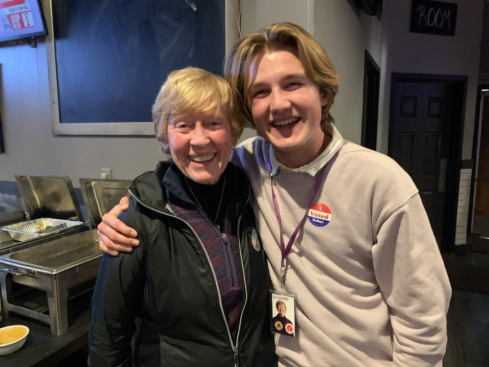

Field Organizing
I have canvassed neighborhoods and talked with voters face to face across three election cycles in Missouri and Wisconsin.
Field organizer · Former MOYAG Speaker of the House
I'm Jack Cannon, a field organizer with three election cycles of campaign work and a former Speaker of the House in Missouri YMCA Youth and Government.
Three strengths I've built through campaigns, youth government, and my coursework.
I have canvassed neighborhoods and talked with voters face to face across three election cycles in Missouri and Wisconsin.
As Speaker of the House in Missouri YMCA Youth and Government, I presided over floor debate and kept the student House of Representatives running on schedule.
As a Data Science student at UW–Madison, I bring data skills that help campaigns understand where their outreach is working and where it needs to go next.
Since 2020, I have worked on a campaign in every election cycle, starting in St. Louis, Missouri, and continuing in Wisconsin. Each campaign taught me the same lesson: elections are won one conversation at a time.

Before campaigns, I learned how legislatures work by running one.
In 2021, I was elected Speaker of the House for Missouri YMCA Youth and Government (MOYAG), a program where high school students write, debate, and pass bills at the Missouri State Capitol. I presided over the House at the 2022 conference.
Visit MOYAGIn 2022 and 2023, I represented Missouri at the YMCA Conference on National Affairs (CONA), where students from across the country present and debate policy proposals on national issues.
Learn about CONAI'm looking for organizing and campaign roles for the 2026 cycle and beyond. I'd be glad to talk.
Email Jack about campaign opportunities